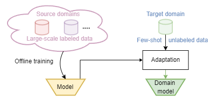

Abstract
In this paper, we aim to adapt a model at test-time using a few unlabeled data to address distribution shifts. To tackle the challenges of extracting domain knowledge from a limited amount of data, it is crucial to utilize correlated information from pre-trained backbones and source domains. Previous studies fail to utilize recent foundation models with strong out-of-distribution generalization. Additionally, domain-centric designs are not flavored in their works. Furthermore, they employ the process of modelling source domains and the process of learning to adapt independently into disjoint training stages. In this work, we propose an approach on top of the pre-computed features of the foundation model. Specifically, we build a knowledge bank to learn the transferable knowledge from source domains. Conditioned on few-shot target data, we introduce a domain prompt generator to condense the knowledge bank into a domain-specific prompt. The domain prompt then directs the visual features towards a particular domain via a guidance module. Moreover, we propose a domain-aware contrastive loss and employ meta-learning to facilitate domain knowledge extraction. Extensive experiments are conducted to validate the domain knowledge extraction. The proposed method outperforms previous work on 5 large-scale benchmarks including WILDS and DomainNet.
Problem Setting

In this work, we focus on the problem of Test-time Domain Adaptation (TTDA) or Few-shot TTDA, which somehow combines UDA and DG. It follows the source-free setting as in DG but requires an additional learning phase at test-time for each of the target domain: when an unseen target domain is encountered at test-time, a few unlabeled images are sampled to update the model towards that domain. The adapted model is then used for testing the data in that domain (as shown in the figure above).
Method Overview
Overview of training pipeline of VDPG. Two disjoint support and query sets are sampled from a training domain. The support set is passed to a domain prompt generator to condense the learned knowledge bank into a domain-specific prompt. The generated prompt is then evaluated on the query set by guiding their feature via a guidance module. Noted, the image/prompt with the same colour belongs to the same domain.
Experimental Results
Comparison with the state-of-the-arts on the WILDS benchmark under the out-of-distribution setting.

Comparison with the state-of-the-arts on the DomainNet benchmark under the leave-one-out setting.
Swapping the generated domain prompts with various similarity for domain #40 and #47.